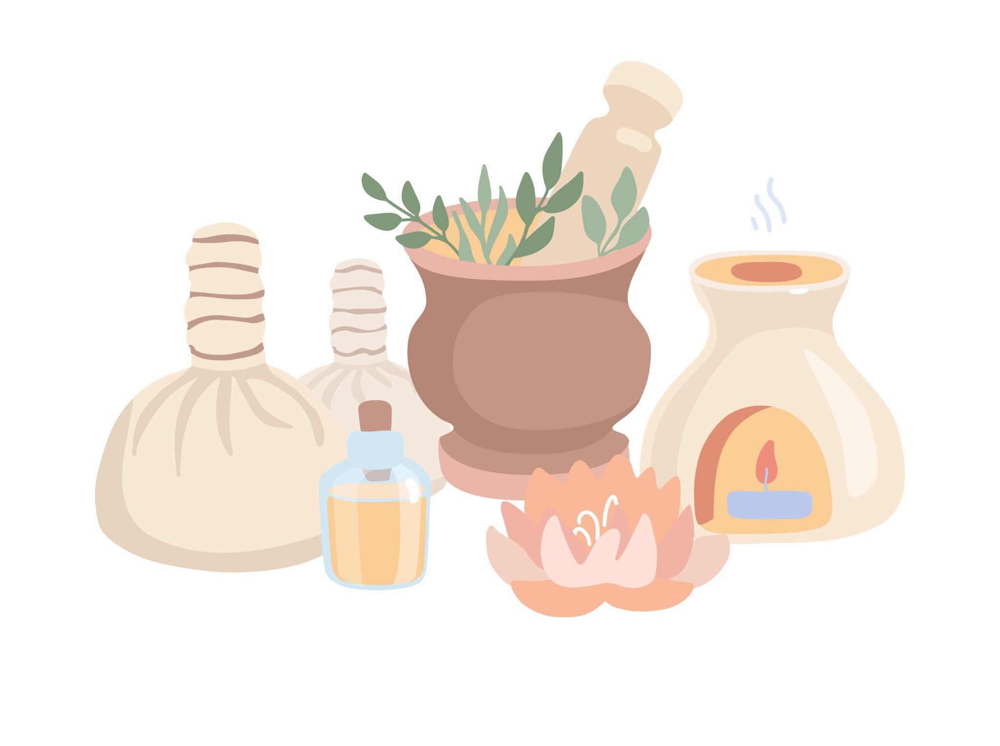
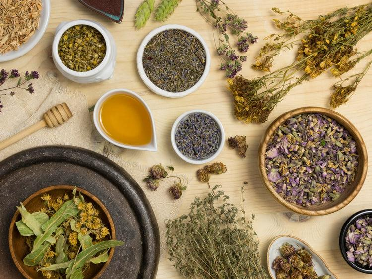

Greeva Pichu
Warm oil therapy focused on the neck to ease stiffness and muscular tension.
Explore therapies before choosing your consultation.
This page gives each treatment category its own space so visitors can understand the clinic's offering without scrolling through a single crowded homepage.

Explore localized basti therapies, oil treatments, steam therapies, supportive procedures, and classical Panchakarma care in a clean, easy-to-scan format.
Targeted oil and retention therapies focused on specific joints, spine, head, and sensory regions.
Warm oil therapy focused on the neck to ease stiffness and muscular tension.
Retained medicated oil over the neck for deeper nourishment and comfort.
Gentle chest-area oil retention therapy designed to promote calm and localized ease.
Localized oil support around the knee to soothe fatigue and improve comfort.
Knee retention therapy with warm medicated oil for joint care and mobility support.
Focused lower-back oil application used to reduce tightness and daily strain.
Warm oil pooling therapy for the lumbar area to support flexibility and relief.
Specialized eye therapy that refreshes tired eyes and supports ocular nourishment.
Local oil application over the back for muscular relaxation and localized relief.
Retained warm oil therapy along the back for stiffness and spinal comfort support.
Therapeutic oil retention over the scalp for calmness, clarity, and nourishment.
Small-dose oil enema therapy used to support Vata balance and internal lubrication.
Nourishing oil-based therapies that support circulation, relaxation, body comfort, and healthy tissue lubrication.
Full-body medicated oil massage for relaxation, circulation, and skin nourishment.
Therapeutic foot massage to reduce fatigue and promote deep calm.
Warm oil bath therapy combining pouring and massage for rejuvenation and comfort.
Head massage with medicated oils to ease stress and support scalp wellness.
Herbal powder massage designed to stimulate circulation and support body toning.
Warming therapies that help release stiffness, support circulation, and prepare the body for deeper Ayurvedic care.
Heated herbal powder bolus fomentation for stiffness and musculoskeletal relief.
Directed steam therapy used to loosen rigidity and support better mobility.
Warm leaf-bolus therapy for pain relief, circulation, and inflammation support.
Full-body pouring therapy that encourages deep relaxation and tissue nourishment.
Whole-body steam therapy to open channels and reduce heaviness and stiffness.
Nourishing rice-bolus sudation therapy for weakness, recovery, and rejuvenation.
Dry heated sand fomentation for swelling, stiffness, and localized discomfort.
Medicated poultice therapy that offers warmth and sustained support to painful areas.
Supportive Ayurvedic procedures for facial care, scalp comfort, oral wellness, ear care, and deep relaxation therapies.
Herbal skin ritual for cleansing, glow, and natural facial rejuvenation.
Medicated oil instillation in the ears for dryness, discomfort, and sensory care.
Ayurvedic ear fumigation traditionally used for localized cleansing support.
Oil holding and gargling practice that supports oral hygiene and jaw comfort.
Herbal facial paste application to soothe, brighten, and refresh the skin.
Herbal pouch facial massage for circulation, tone, and natural radiance.
Continuous forehead oil stream therapy for calmness, sleep, and mental relaxation.
Medicated paste application on the scalp crown for cooling and head comfort.
Streamed medicated buttermilk therapy used for scalp soothing and heat balance.
Eye nourishment therapy to relieve dryness, strain, and visual fatigue.
Warm herbal poultice care for localized pain, stiffness, and swelling support.
Foundational detox and cleansing therapies used in classical Ayurveda for guided purification and deeper internal balance.
Decoction enema therapy used in cleansing protocols for deeper detox support.
Medicated oil enema therapy that nourishes tissues while balancing Vata.
Nasal therapy with medicated oils or herbs for sinus, head, and clarity support.
Therapeutic emesis procedure performed under supervision as part of detox care.
Controlled purgation therapy used for internal cleansing and Pitta balance.
Bloodletting-based detox method used selectively in classical Ayurvedic practice.
Therapeutic venesection approach performed in specific traditional detox indications.
Share your symptoms, routine, and health priorities with the doctor.
Receive an Ayurvedic evaluation of imbalance patterns and healing needs.
Follow a recommended therapy, diet, or herbal support plan.
Track progress over time with a focus on durable healing.
